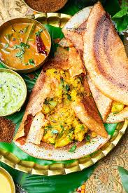

Ingredients
- 2 cups rice
- 1 cup urad dal
- 1/2 tsp fenugreek seeds
- 2 large potatoes, boiled and mashed
- 1 large onion, finely chopped
- 2 green chilies, chopped
- 1 tbsp ginger, minced
- 1 tsp mustard seeds
- 1 tsp turmeric
- 2 tbsp oil
- Salt to taste
- Fresh cilantro for garnish
Requirements
- Large mixing bowl
- Griddle or tawa
- Spatula
- Knife
- Cutting board
Description
- Soak rice, urad dal, and fenugreek seeds in water for 6 hours. Grind to a smooth batter and ferment overnight. This fermentation process is crucial for the dosa to have the right texture and flavor.
- Heat oil in a skillet over medium heat. Add mustard seeds, onions, green chilies, and ginger. Sauté until onions are golden brown. This forms the base of the potato filling.
- Add turmeric and mashed potatoes. Cook for 5 minutes. Season with salt and garnish with cilantro. The filling should be well-cooked and flavorful.
- Heat a griddle or tawa over medium heat. Pour a ladleful of batter and spread it in a circular motion to form a thin dosa. The dosa should be crispy and golden brown.
- Cook until the edges start to lift. Place a spoonful of potato filling in the center and fold the dosa. The filling should be evenly distributed.
- Serve hot with coconut chutney and sambar. The chutney and sambar add a delicious contrast to the dosa.